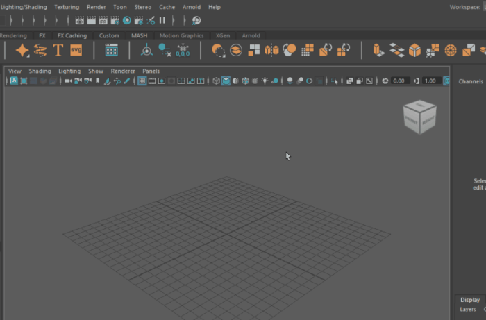
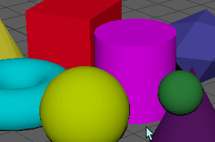
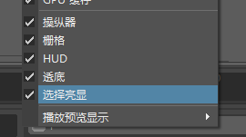

此“显示”(Show)菜单显示在场景视图之上，或者显示在具有多个场景视图的布局中每个视图面板之上。

使用此菜单中的菜单项可以显示或隐藏面板中的特定对象类型。
提示： 某些对象或组件具有热键，便于快速切换可见性状态，从而可节省导航到此菜单所用的时间。
以下对象为：
| 热键
|
切换可见性
|
|---|
| Alt + 1
|
NURBS 曲线
|
| Alt + 2
|
多边形网格
|
| Alt + 4
|
图像平面
|
| Alt + 5
|
线框/着色
|
隔离选择(Isolate Select)
可以仅显示场景中的某些对象或组件。每个面板都保留自己的“隔离选择”(Isolate Select)设置。
与
隐藏(Hide)命令不同，
“隔离选择”(Isolate Select)支持隔离组件（多边形顶点、面和边、NURBS CV 或细分曲面网格面）和对象，并且只影响显示，而不影响渲染。
注：
“隔离选择”(Isolate Select)不处理细分曲面上的顶点或边。
- 查看选定对象(View Selected)
- 激活或取消激活“隔离选择”(Isolate Select)。激活后，将在面板底部显示“隔离”字样，表示当前选择已隔离。
热键：Ctrl + 1
- 自动加载新对象(Auto Load New Objects)、自动加载选定对象(Auto Load Selected Objects)
- 启用后，在添加新对象或更改选择时，系统将自动更新“隔离选择”(Isolate Select)面板。如果禁用，则必须使用“加载”(Load)、“添加”(Add)或“移除选定对象”(Remove Selected Objects)选项更新面板。
注： “自动加载新对象”(Auto Load New Objects)默认情况下处于启用状态。
- 加载选定对象(Load Selected Objects)、添加选定对象(Add Selected Objects)、移除选定对象(Remove Selected Objects)
- 如果“自动加载”(Auto Load)选项处于禁用状态，您可以使用这些选项控制“隔离选择”(Isolate Select)的显示。从场景中选择项目，然后根据需要进行加载、添加或移除。请注意，“加载选定对象”(Load Selected Objects)将使用当前选择替换显示，而“添加选定对象”(Add Selected Objects)会将当前选择添加到已显示的选择中。
- 书签(Bookmarks)
- 用于为隔离的选择添加书签。若要创建书签，请选择“显示 > 隔离选择 > 书签 > 为当前对象建立书签”(Show > Isolate Select > Bookmarks > Bookmark Current Objects)。如果要为书签命名，请选择选项框；否则，系统将使用默认名称。
若要查看书签项，请选择“显示 > 隔离选择 > 书签 > BookmarkName”(Show > Isolate Select > Bookmarks > BookmarkName)。再次选择可禁用该选项，并返回上一个视图。可以同时查看多个书签。书签将与场景作为一个集共同保存。
播放预览显示(Playblast Display)
展开此菜单可隐藏来自任何播放预览的元素。
默认设置为
“显示”(Show)。
视口(Viewport)
展开此菜单可查看要在视口中隐藏或显示的元素。元素按类别进行分组（“曲线和曲面”(Curves & Surfaces)、“FX”、“绑定和动画”(Rigging & Animation)、“照明、着色和渲染”(Lighting, Shading & Rendering)以及“视口工具”(Viewport Utilities)）。
每个元素的定义如下。
“曲线和曲面”(Curves & Surfaces)
- 构造平面(Construction Planes)
- 构造平面用于捕捉构造工具。
- 切换可隐藏构造平面。
- 尺寸(Dimensions)
- 尺寸是由线框表示的流体容器的物理尺寸。
- 切换可隐藏流体容器线框。
- NURBS 曲线
-
NURBS（非均匀有理 B 样条线）是一种可以用来在 Maya 中创建 3D 曲线和曲面的几何体类型。Maya 提供的其他几何体类型为多边形和细分曲面。
- 切换可隐藏 NURBS 曲线。
- NURBS CV
-
CV（控制顶点）将控制曲线如何从编辑点之间的直线“被拉动”。其将是控制曲线形状的最基本和最重要的手段。连续 CV 之间的连线将形成控制壳线。
- 切换可隐藏 NURBS 控制顶点。
- NURBS 壳线(NURBS Hulls)
- 随着曲线的跨度和编辑点的增多，可能会无法追踪 CV 的顺序。为了显示 CV 之间的关系，Maya 可以在 CV 之间绘制连线。这些连线称为壳线。
- 切换可隐藏 NURBS 壳线。
- NURBS 曲面
-
NURBS 曲面本质上是四边面片，不允许以与多边形曲面类型相同的方式创建洞。
- 切换可隐藏 NURBS 曲面。
FX
- 动力学(Dynamics)
- 通过将动力学力应用于 MASH 网络，创建重力、摩擦和碰撞模拟。
- 切换可隐藏动力学操纵器。
- 动态约束(Dynamic Constraints)
- 动态约束可用于修改动态效果。
- 切换可隐藏动态约束操纵器。
- 流体(Fluids)
- Maya 流体效果(Fluid Effects)是一种真实地模拟和渲染流体运动的技术。使用“流体效果”(Fluid Effects)可以创建各种 2D 和 3D 大气、爆破效果、太空和液体效果。
- 切换可隐藏流体效果。
- 毛囊(Follicles)
- 毛囊是头发系统中的单根头发。
- 切换可隐藏毛囊操纵器。
- 头发系统(Hair Systems)
- 也称为 hairSystemShape 或 (nHair) 节点。头发系统可用于在 NURBS 或多边形曲面上创建动力学 nHair。
- 切换可隐藏头发系统操纵器。
- nCloth
- nCloth 是一个快速而稳定的动力学布料解决方法，它使用一系列链接的粒子来模拟各种动力学多边形曲面。
- 切换可隐藏 nCloth 操纵器。
- nParticle
- nParticle 是一个使用 Maya® Nucleus™ 动力学模拟框架的粒子生成系统。
- 切换可隐藏 nParticle 操纵器。
- nRigid
- nRigid 用于创建与 nDynamics（nCloth、nParticle 等）的碰撞。
- 切换可隐藏 nRigid 操纵器。
绑定和动画(Rigging & Animation)
- 片段重影(Clip Ghosts)
- 通过重影对象可了解动画在场景中的移动方式。可以显示片段重影，片段重影表示 3D 空间中的片段动画，使您可以预览片段的轨迹并帮助您在片段之间手动匹配姿势。
- 切换可隐藏片段重影。
- 控制器(Controllers)
- 专用控制器节点可识别用于控制动画的模型、根据鼠标接近度控制可见性、定义自定义拾取漫游层次。
- 切换可隐藏控制器。
- 变形器(Deformers)
- 变形器是可以使用简单操纵和关键帧不能进行的方式变换对象或为对象设置动画的工具。
- 切换可隐藏对象周围的变形器晶格。
- IK 控制柄(IK Handles)
- 使用反向运动学 (IK)，可以移动 IK 控制柄，以设置整个关节链的姿势。IK 控制柄是一个可以选择并移动以影响其指定关节的对象。
- 切换可隐藏 IK 控制柄。
- 关节(Joints)
- 关节允许您设置在场景视图中如何绘制关节。
- 切换可隐藏 IK 关节操纵器。
- 定位器(Locators)
- 定位器用于将对象约束到已设置动画的其他对象。
- 切换可隐藏定位器。
- 运动轨迹(Motion Trails)
- 可编辑运动轨迹可让您在 3D 场景中预览动画，并以交互方式调整关键帧。运动轨迹在动画模型周围直观地表示关键帧，从而可以直接调整动画的计时、关键帧、切线和位置。
- 切换可隐藏运动轨迹。
- 枢轴(Pivots)
- 枢轴点定义对象或组件绕其旋转和缩放的位置。默认情况下，一个对象或一组对象/组件的枢轴点位于其中心。
- 切换可隐藏枢轴点。
照明、着色和渲染(Lighting, Shading & Rendering)
- 摄影机(Cameras)
- 在 Maya 中查看场景时，您是通过摄影机查看的。将其视为一个处于电影布景中的导演，正在通过摄影机镜头进行观察。视野受限于可从镜头中查看的范围。
- 切换可隐藏场景中不属于四个默认摄影机（透视、顶、前、侧）的摄影机。
- 图像平面(Image Planes)
- 可以导入一个图像、一系列图像文件或一个影片文件，并将其映射到图像平面以用作场景的背景。
- 切换可隐藏图像平面。
- 灯光(Lights)
- Maya 具有多个光源，使您可以获得各种照明效果。
- 切换可隐藏场景中的灯光。
- 笔划(Strokes)
- 笔划用于 Maya 中的 3D 绘制，笔划是三维的且可编辑。每个笔划都是场景中的一个对象。
- 切换可隐藏绘制笔划。
- 纹理放置(Texture Placements)
- 默认情况下，纹理放置工具(Texture Placement tool)针对“标签映射”(Label Mapping)设置，让您可以像标签一般拉伸、收缩、移动和旋转纹理。
- 切换可隐藏纹理放置。
视口工具(Viewport Utilities)
- Blue Pencil
-
Blue Pencil 是一种 2D 绘制工具，可用于在 3D 空间中绘制。
- 切换可在视口中隐藏 Blue Pencil 绘制。
- 控制柄(Handles)
- 控制柄位于属性编辑器的“显示”(Display)下拉列表下。它们用于可视化对象的中心点。默认情况下会禁用它们。
- 切换可隐藏控制柄和局部轴。
- HUD
- 视口 HUD（平视显示仪）包含场景信息，如多边形计数、对象细节等。
- 切换可隐藏 HUD。
- 透底(Hold-Outs)
- 透底用于在真实场景中合成 CG 对象。透底是用于替代真实对象的对象，可捕捉场景的灯光和反射。
- 切换可隐藏透底。
- 栅格(Grid)
- 可用于在单个面板中禁用栅格。
- 切换可隐藏栅格。
- 操纵器(Manipulators)
- “移动工具”(Move Tool)、“旋转工具”(Rotate Tool)和“缩放工具”(Scale Tool)。
- 切换可隐藏“移动工具”(Move Tool)、“旋转工具”(Rotate Tool)和“缩放工具”(Scale Tool)操纵器。
- 选择亮显(Selection Highlighting)
- 启用或禁用所选元素的亮显。默认情况下此设置处于启用状态，即选择对象时使对象亮显。请查看以下示例，了解激活“选择亮显”(Selection Highlighting)时的效果，后跟禁用“选择亮显”(Selection Highlighting)时的效果。
-

“选择亮显”(Selection Highlighting)菜单位于
“显示”(Show)面板菜单底部。

- GPU 缓存(GPU Cache)
- GPU 缓存文件进行了优化以在 Maya 中实现快速播放性能。您可以从场景中的多边形或 NURBS 对象创建基于 Alembic 的 GPU 缓存文件。可以将所有场景对象保存到单个缓存，或为每个选定对象创建缓存文件。
- 切换可隐藏场景中的所有 GPU 缓存文件。
预设(Presets)
使用“预设”(Presets)可保存要在视口中显示的元素。
- 创建预设(Creating Presets)
-
可以在“显示”(Show)面板中保存预设选择。首先：
现在可以在“预设”(Presets)菜单中查看和选择预设。
- 重置预设(Reset a Preset)
- 如果对“显示”(Show)菜单中的预设进行了不需要的更改，请单击“重置当前预设”(Reset Current Preset)。